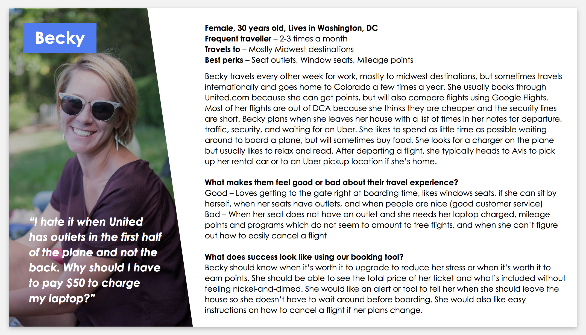
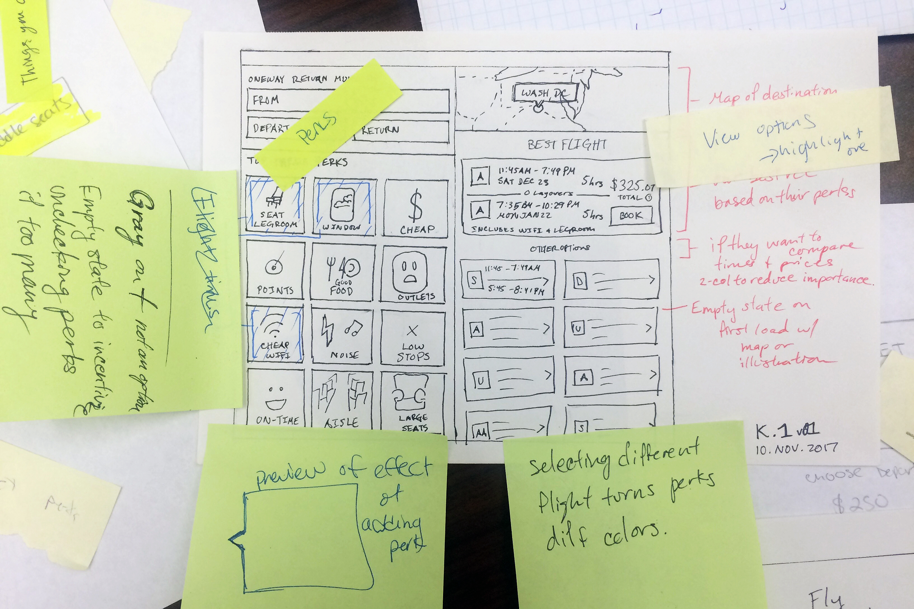
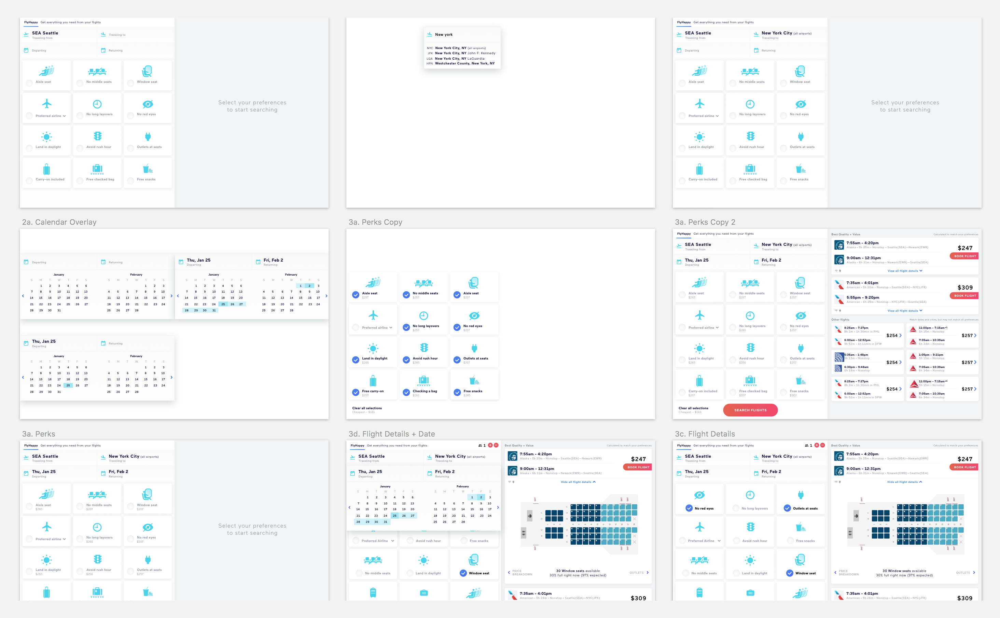
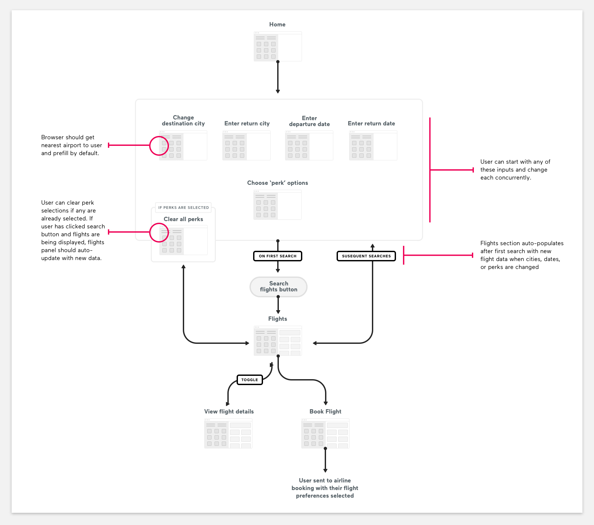
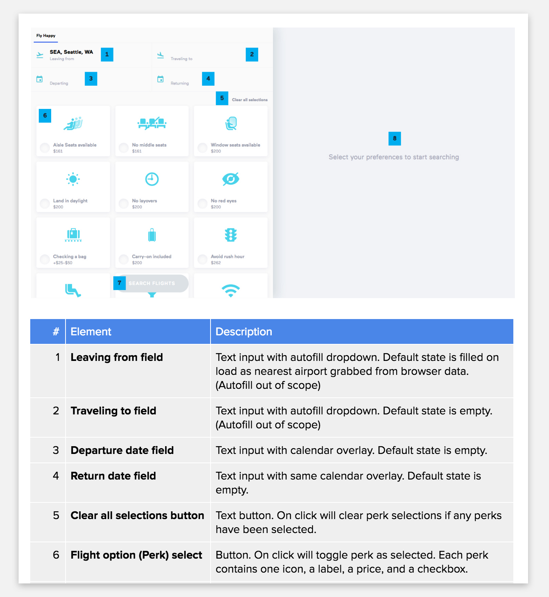

Contributions
My work
In addition to splitting responsibilities between my teammates on documents regarding design problem definitions, user research, and presentations, here are deliverables I created to aid our process.
User research
I conducted four interviews & three observations of people using their favorite flight booking tool. From that, I distilled the information into a case study about one of my interviewees, Becky.
Sketching
I contributed a bunch of sketches to our team review. We ultimately chose one of my sketches to move forward as the basis of our design.
Re-sketch of the chosen design

UI Design
I started out designing the interface in Sketch because we wanted to try to use InVision to tie screens together for this project, which would give my other team members an opportunity to explore both tools.
Prototype
After experiencing an issue with InVision not allowing users to select any combination of perks at once and have those screen partials display simultaneously, I switched to finishing an early version of the prototype I started in HTML, CSS, and Javascript. The javascript toggles the search flight button after the fields for airports and dates are filled in and controls which flight options are displayed based on which perks are selected.
 View Live Prototype
View Live Prototype
Documentation
User flow
Screen annotation
Challenges & Obstacles
One major weakness we had as a team was trying to do too much work in one week. I value efficiency highly in my own work and was frequently reeling our team back into what was feasible to be completed in one week. There were also definite compromises each of us had to consider because of work deadlines, especially when it came to what was going to be included in the prototype.
What was beneficial & what could've improved
It was beneficial going through this process in a much more collaborative environment where each team member could take on different responsibilities. I thought this led to a process we all felt much more invested in. Conversely, having everyone involved in every step of the project also meant we spent a lot of time nitpicking our work and not focusing on what was necessary to move forward with the process.
Overall
During most of the assignments, we all tried to do the assignment together. I contributed my skills as a designer and front-end developer to the prototyping portion of the project, but I wish there would've been more time for me to allow my teammates to participate in this or another method we could've used which would've accommodated this while still keeping its interactivity. Overall, our team worked well in distributing the work and did a great job volunteering to take on parts of assignments and handle project management tasks.